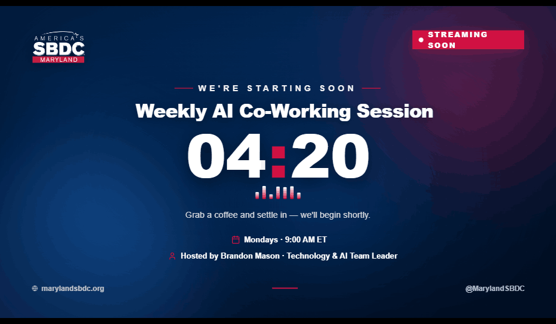
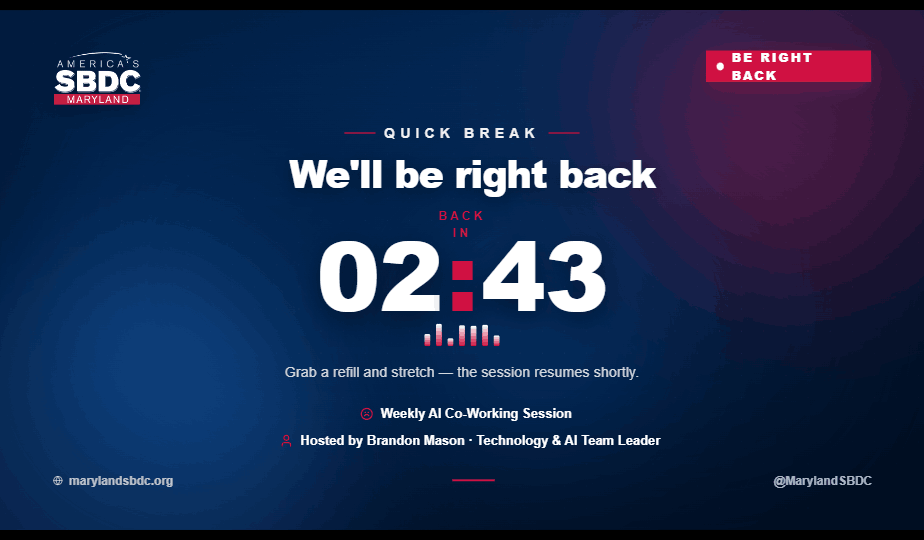
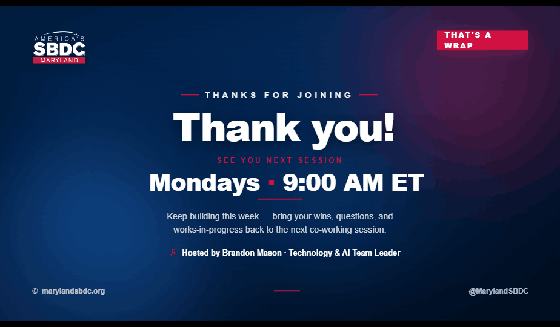
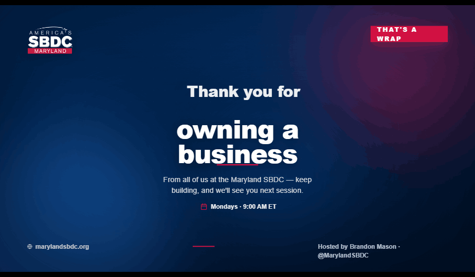
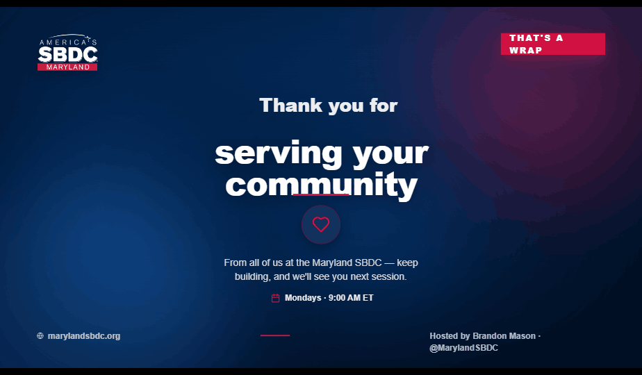

Five full-screen, fully-branded holding slides for the livestream. Open any slide, then press F11 for full-screen (or add it as a Browser source in OBS). Each scales to any resolution.

Restartable countdown to the start of the session, with day/time and host.
Open slide
A "back in…" break timer for mid-session pauses. Same restart controls.
Open slide
Sign-off slide pointing viewers to the next Monday session. Static, no timer.
Open slide
A warm “thank you for…” closer that gently cycles through a feel-good phrase bank.
Open slide
Same rotating closer, each phrase paired with a matching SBDC-red line icon.
Open slide